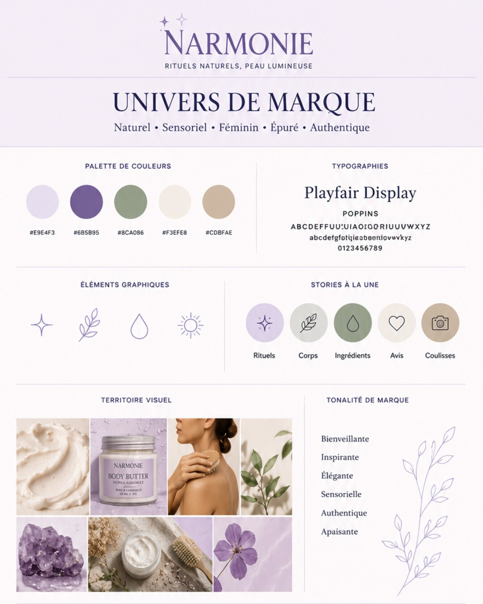
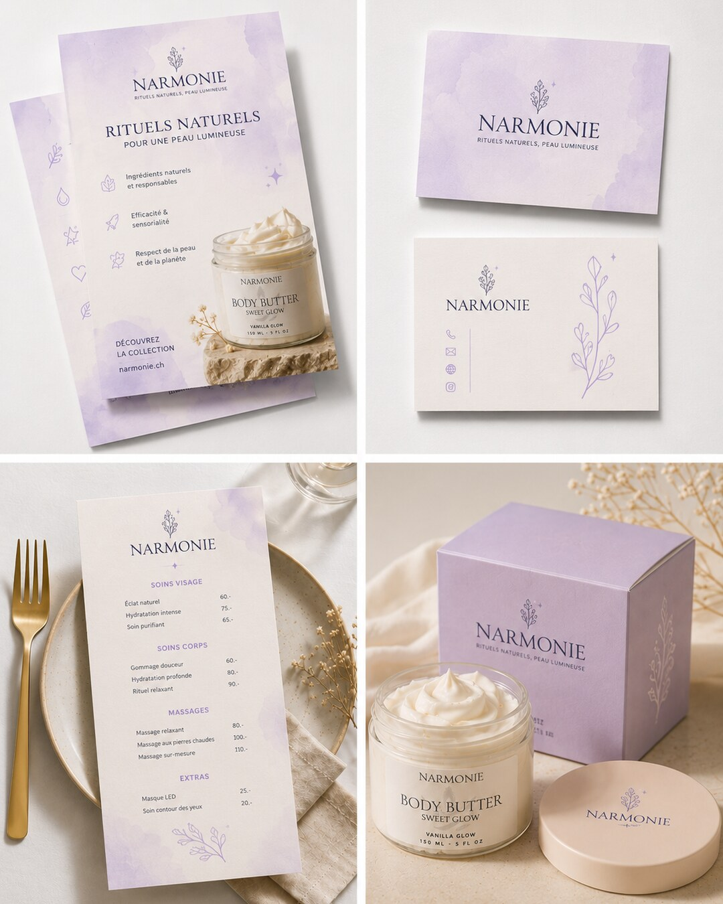

How does it actually work?
A café-bakery opening in Yverdon. On one side, an identity built step by step; on the other, a logo made in a hurry and materials that each go their own way.
- 1What you want to convey
- 2A visual universe
- 3The logo takes shape
- 4Colours and typefaces
- 5The same image everywhere
- 6The brand book delivered
- 1A logo made in one evening
- 2A different colour on every material
- 3Every supplier improvises
- 4People mix you up with the neighbour
What customers should feel when they walk in:
Sourdough bread, morning light, light wood, terracotta.
- Logo: colour, black, white and icon versions
- Colours for screen and print
- Typefaces and usage rules
- SVG, PNG and PDF files
A cup icon you'll find on hundreds of other cafés.
Do you have the logo in high resolution?
Which green is it, exactly?
Which font for the menu?
“Are you the one with the terrace?”


Fictional example. Timelines depend on the scope of the project; they are set out in the quote.
Is it right for your business?
You're launching your business, or changing it
An opening, a new offer, a business takeover: it's the best moment to set an identity, before the materials multiply. Everything you print or publish afterwards will start from the same base.
Your image no longer looks like you
A dated logo, colours that change from one material to the next, a website that doesn't match your shopfront. If your name is already known, we keep what works and bring order around it.
Your offer isn't clear yet
An identity expresses what you offer and to whom. If that isn't settled yet, a beautiful logo won't do it for you: we then start with strategy, and the identity comes right after.
We first look at your current image and what your clients remember of it. If a complete redesign isn't needed, we tell you in the first conversation, before any quote.
Recognise yourself in one of these situations? The easiest thing is to talk about it: one first conversation is enough to see what your image should say about you.
Let's talk about your projectWhat Wanderful takes care of
-
PositioningWhat you want people to remember about you, who you're speaking to and what sets you apart from others in your region. It's the basis for every visual choice.
-
The logoSeveral directions to start with, then a version refined with you, available in colour, black, white and as an icon for small formats.
-
The brand guidelinesColours, typefaces, image styles and usage rules, so your identity stays the same whatever the material or whoever prepares it.
-
Printed materialsBusiness cards, flyers, menus, letterhead, packaging or signage: we prepare print-ready files for your printer.
-
Digital assetsProfile pictures, covers, post templates, email signature and ad visuals, in the right formats for each platform.
-
The brand bookA clear document that brings everything together: you pass it on to your printer, your developer or a future colleague, and everyone knows what to do.
All source files belong to you. You can work with whoever you like on your identity, without depending on us.
How we work
Brief
We talk about your business, your clients and what you want them to feel. We also look at what others in your industry do, so you stand out.
Universe
A moodboard to choose a direction together: colours, materials, atmosphere. We agree on the spirit before drawing anything.
Creation
Several logo directions, then the guidelines built around the one you choose. Two rounds of feedback are included to refine it.
Delivery
The brand book, all files in the right formats and the agreed materials, ready to print or publish.
What we need from you: one hour for the brief, your feedback at each stage, and examples of brands you like or dislike, even outside your industry. They often say more than a long description.
What you actually get
A recognisable image
People recognise you on a card, a sign or a post, before they even read your name.
The same everywhere
Simple rules anyone can follow: your materials look alike, even when prepared by different people.
Ready-to-use files
The right format for every use. No more hunting for “the logo in high resolution”.
An image that inspires trust
A polished presentation reassures people before the first contact: it suggests the work will be polished too.
And your personal visibility?
In some professions, people don’t choose a company: they choose a person.
-
Your LinkedIn profilePhoto, banner, headline and summary reworked so that anyone understands in ten seconds what you do and who for. This is the page your prospects check before they reply to you.
-
An editorial line you can keep upThe themes you want to be known for, and a publishing calendar over one to three months, aligned with your business peaks. A steady rhythm beats bursts followed by long silences.
-
The writing, done for youWe write the posts, the articles and the newsletters from a conversation with you. You review, you adjust, you sign: your ideas and your voice, without the evenings it takes.
-
Short videosGuidance and production of short formats for LinkedIn and Instagram. A face and a voice build a trust that text alone never earns.
-
A monthly reviewReach, engagement and above all the inbound contacts your presence actually generated. That is the only figure that decides whether it is worth carrying on.
This work runs alongside the company’s identity, or on its own if your brand is already in place. It suits above all the professions where recommendation makes the sale: brokerage, consulting, real estate and the liberal professions.
Our approach
We don't start with the logo. We start from what your clients should feel when they discover you, then choose the shapes, colours and typefaces that express it. The logo comes afterwards, as a consequence.
An identity has to live without us. That's why we pay as much attention to the usage rules and the files delivered as to the logo itself: your printer, your developer or your next colleague should be able to use it without calling us.
This approach draws on the training of Nassima Rizzotti, founder of Wanderful, in marketing at HEC Lausanne, and on our own identity, which we built the same way. See our approach in detail.
“A great experience with Wanderful Marketing. They helped us build our entire branding strategy, including logo design, visual identity and digital strategy. A young, creative team that's all-in on AI! Highly recommended.”
Our work in action
Real identities built for our clients. The full case study is on the healthcare case study page.






Also in this service
Personal brandingFreelancer, consultant, broker? A clear personal image, so your clients come to you.Frequently asked questions
I already have a logo, do I need to start over?
Not necessarily. If your clients recognise your logo, we can modernise it and build the colours, typefaces and rules that are missing around it. A complete redesign only makes sense if your current image works against you.
How many proposals will I receive?
Several logo directions to start with, then two rounds of feedback included to refine the one you choose.
Which files will I receive?
The logo in all its versions and every useful format (SVG, PNG, PDF), colour codes for screen and print, the typefaces and a brand book explaining how to use everything. The source files belong to you.
How long does it take?
It depends on the scope of the project: a logo on its own is quicker than a full identity with a brand book and printed materials. The schedule is set out in the quote, step by step.
Can you also do the website and social media?
Yes. Once the identity is set, we can roll it out on your website and your social media. It isn't an obligation: with the brand book, any supplier can do it.
How does the budget work?
An amount agreed in advance, set out in writing after the first conversation, detailing what's included.
What determines the quote:
Let's talk about your project
A first conversation to understand what you want people to remember about you, and see what your image should say.